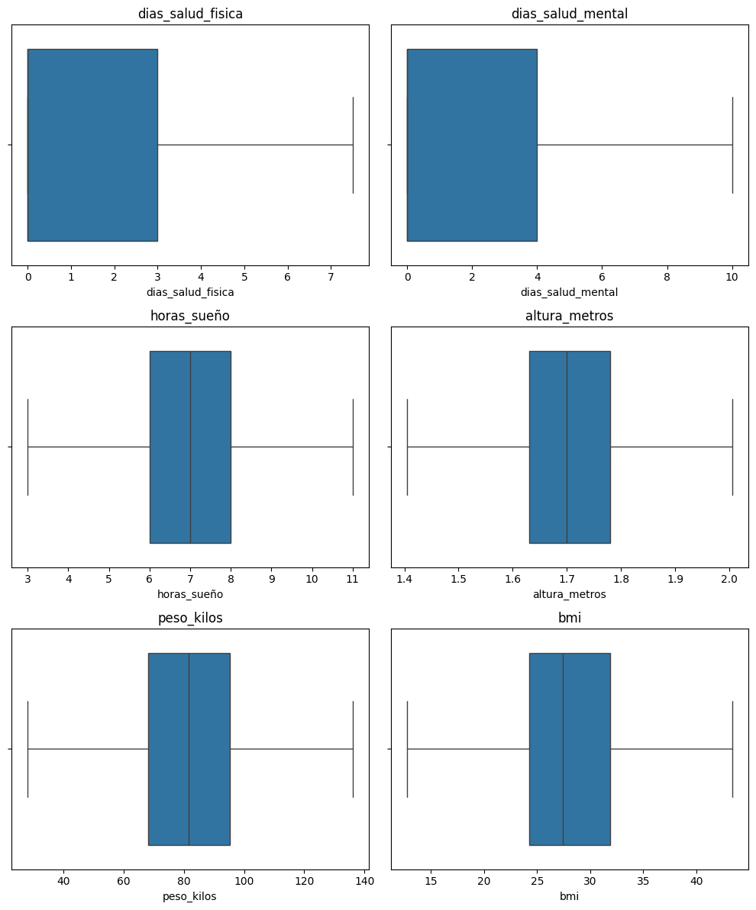
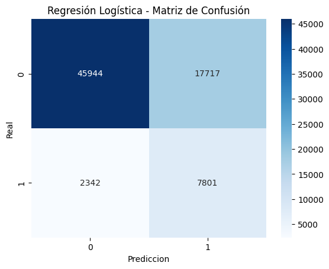
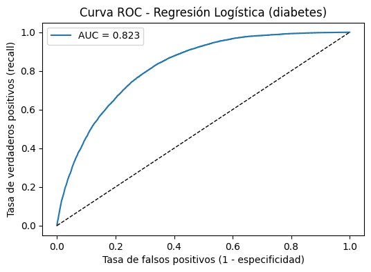
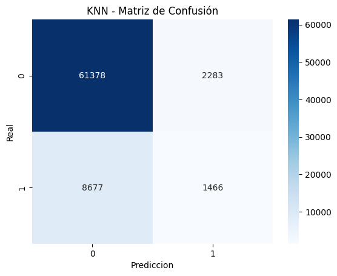
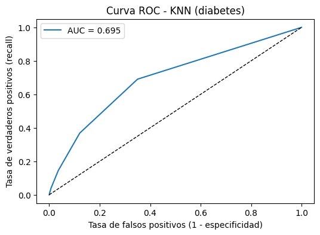
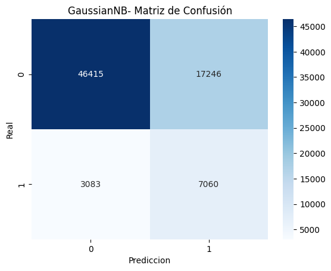
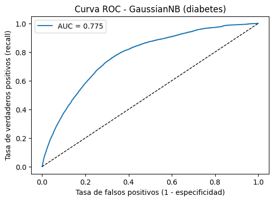

4. Modelado Benchmark#
En esta sección se implementan y comparan distintos modelos de aprendizaje supervisado con el fin de establecer un benchmark de desempeño sobre el conjunto de datos procesado.
El propósito de este análisis es evaluar cómo distintos algoritmos clásicos responden al mismo problema de predicción, identificando sus fortalezas, debilidades y sensibilidad frente a las características del dataset.
Se trabajará con un conjunto de modelos que cubren tanto enfoques lineales como no lineales:
Regresión Logística
K-Nearest Neighbors (KNN)
Naive Bayes
Árbol de Decisión
Random Forest
XGBoost
Support Vector Machine (SVM – LinearSVC)
Cada modelo se entrena utilizando un pipeline de preprocesamiento, que incluye imputación de valores faltantes, codificación de variables categóricas y estandarización de variables numéricas.
Además, se realiza una búsqueda de hiperparámetros (GridSearchCV) y validación cruzada estratificada para garantizar la robustez de los resultados y evitar el sobreajuste.
Objetivo del modelado benchmark
Construir una línea base de comparación entre los distintos algoritmos.
Analizar métricas de desempeño como Accuracy, Recall, F1-score y AUC-ROC.
Identificar los modelos con mayor capacidad predictiva antes de aplicar técnicas de balanceo, optimización o interpretabilidad.
Sentar las bases para el proceso de tuning avanzado e interpretación de resultados que se desarrollará en las siguientes secciones.
Librerias
import pandas as pd
import matplotlib.pyplot as plt
import seaborn as sns
import math
import time
from sklearn.neighbors import KNeighborsClassifier, KNeighborsRegressor
from sklearn.metrics import (confusion_matrix, classification_report, accuracy_score,
precision_score, recall_score, f1_score, roc_auc_score, roc_curve,
mean_absolute_error, mean_squared_error, r2_score, root_mean_squared_error)
from sklearn.model_selection import train_test_split
from sklearn.compose import ColumnTransformer
from imblearn.pipeline import Pipeline
from sklearn.preprocessing import OneHotEncoder, StandardScaler
from sklearn.linear_model import LogisticRegression
from sklearn.metrics import (
classification_report, confusion_matrix, roc_curve, roc_auc_score,
precision_recall_curve, average_precision_score, precision_score, recall_score
)
from sklearn.base import BaseEstimator, TransformerMixin
from sklearn.preprocessing import StandardScaler
import numpy as np
Carga de base de datos
df= pd.read_csv('df_limpio.csv')
Verificacion de nulos
df.isnull().sum()
estado 0
sexo 0
salud_general 0
dias_salud_fisica 0
dias_salud_mental 0
ultimo_chequeo 0
actividades_fisicas 0
horas_sueño 0
dientes_removidos 0
ataque_cardiaco 0
angina 0
ACV 0
asma 0
cancer_piel 0
EPOC 0
trastorno_depre 0
enfermedad_riñon 0
artritis 0
diabetes 0
sordo_semisordo 0
ciego_semiciego 0
dif_concentracion 0
dif_caminar 0
dif_vestirduchar 0
dif_encargo 0
estado_fumador 0
uso_cigarroelect 0
escaner_torax 0
categoria_etnica 0
categoria_edad 0
altura_metros 0
peso_kilos 0
bmi 0
bebedor_alcohol 0
prueba_VIH 0
gripa_vac 0
pneumo 0
tetanos 0
alto_riesgo_ap 0
covid 0
dtype: int64
Visualización del Dataset#
df.head()
| estado | sexo | salud_general | dias_salud_fisica | dias_salud_mental | ultimo_chequeo | actividades_fisicas | horas_sueño | dientes_removidos | ataque_cardiaco | ... | altura_metros | peso_kilos | bmi | bebedor_alcohol | prueba_VIH | gripa_vac | pneumo | tetanos | alto_riesgo_ap | covid | |
|---|---|---|---|---|---|---|---|---|---|---|---|---|---|---|---|---|---|---|---|---|---|
| 0 | Alabama | Female | Very good | 4.0 | 0.0 | Within past year (anytime less than 12 months ... | Yes | 9.0 | None of them | No | ... | 1.60 | 71.67 | 27.99 | No | No | Yes | Yes | Yes, received Tdap | No | No |
| 1 | Alabama | Male | Very good | 0.0 | 0.0 | Within past year (anytime less than 12 months ... | Yes | 6.0 | None of them | No | ... | 1.78 | 95.25 | 30.13 | No | No | Yes | Yes | Yes, received tetanus shot but not sure what type | No | No |
| 2 | Alabama | Male | Very good | 0.0 | 0.0 | Within past year (anytime less than 12 months ... | No | 8.0 | 6 or more, but not all | No | ... | 1.85 | 108.86 | 31.66 | Yes | No | No | Yes | No, did not receive any tetanus shot in the pa... | No | Yes |
| 3 | Alabama | Female | Fair | 5.0 | 0.0 | Within past year (anytime less than 12 months ... | Yes | 9.0 | None of them | No | ... | 1.70 | 90.72 | 31.32 | No | No | Yes | Yes | No, did not receive any tetanus shot in the pa... | No | Yes |
| 4 | Alabama | Female | Good | 3.0 | 15.0 | Within past year (anytime less than 12 months ... | Yes | 5.0 | 1 to 5 | No | ... | 1.55 | 79.38 | 33.07 | No | No | Yes | Yes | No, did not receive any tetanus shot in the pa... | No | No |
5 rows × 40 columns
Eliminar variable no relevantes para el modelo#
cols_drop = [
# Moderadamente relevantes
"sexo", "cancer_piel", "escaner_torax",
"gripa_vac", "pneumo", "tetanos", "covid",
# Poco relevantes o indirectas
"estado", "ciego_semiciego", "sordo_semisordo",
"dif_concentracion", "dif_caminar", "dif_vestirduchar",
"dif_encargo", "prueba_VIH"
]
# Eliminar columnas
df = df.drop(columns=cols_drop)
Partición de Datos antes de Tratar para evitar Data Leakage#
# Separar X (features) e y (target)
X = df.drop(columns='diabetes')
y = df['diabetes']
# === Split estratificado ===
X_train, X_test, y_train, y_test = train_test_split(
X, y, test_size=0.3, stratify=y, random_state=42
)
num_cols = X_train.select_dtypes(include="number").columns
cat_cols = X_train.select_dtypes(include="object").columns
Preprocesamiento de Datos#
Análisis de Outliers#
class ManejoAtipicos(BaseEstimator, TransformerMixin):
def __init__(self, metodo="iqr", estrategia="winsorizar"):
self.metodo = metodo
self.estrategia = estrategia
self.limites_ = {}
def fit(self, X, y=None):
X = pd.DataFrame(X)
for col in X.columns:
if self.metodo == "iqr":
Q1 = X[col].quantile(0.25)
Q3 = X[col].quantile(0.75)
IQR = Q3 - Q1
lim_inf = Q1 - 1.5 * IQR
lim_sup = Q3 + 1.5 * IQR
elif self.metodo == "percentil":
lim_inf = X[col].quantile(0.01)
lim_sup = X[col].quantile(0.99)
else:
raise ValueError("Método no soportado")
self.limites_[col] = (lim_inf, lim_sup)
return self
def transform(self, X):
X = pd.DataFrame(X).copy()
for col in X.columns:
lim_inf, lim_sup = self.limites_[col]
if self.estrategia == "eliminar":
X = X[(X[col] >= lim_inf) & (X[col] <= lim_sup)]
elif self.estrategia == "winsorizar":
X[col] = np.where(X[col] < lim_inf, lim_inf, X[col])
X[col] = np.where(X[col] > lim_sup, lim_sup, X[col])
return X.reset_index(drop=True)
X_train_num = X_train[num_cols]
X_test_num = X_test[num_cols]
# Instanciar el manejador de atípicos
atipicos= ManejoAtipicos(metodo="iqr", estrategia="winsorizar")
# Ajustar solo con TRAIN
atipicos.fit(X_train_num)
# Transformar TRAIN y TEST
X_train_num_sin_atip = atipicos.transform(X_train_num)
X_test_num_sin_atip = atipicos.transform(X_test_num)
for col in num_cols:
X_train.loc[:, col] = X_train_num_sin_atip[col].values
X_test.loc[:, col] = X_test_num_sin_atip[col].values
plots_per_row = 2
n = len(num_cols)
rows = math.ceil(n/plots_per_row)
fig, axes = plt.subplots(rows, plots_per_row, figsize=(5*plots_per_row,4*rows))
for i, col in enumerate(num_cols):
ax = axes.flatten()[i]
sns.boxplot(x=X_train[col], ax=ax).set_title(col)
for ax in axes.flatten()[n:]: fig.delaxes(ax)
plt.tight_layout()

Después del tratamiento de outliers podemos observar que los datos se visualizan más compactos y con una distribución manejable.
X.to_csv("df_sin_atipicos.csv", index=False)
y.to_frame(name='diabetes').to_csv("y_sin_atipicos.csv", index=False)
# Guardar conjuntos de entrenamiento y prueba
X_train.to_csv("X_train.csv", index=False)
X_test.to_csv("X_test.csv", index=False)
# Convertir y_train / y_test a DataFrame para que tengan nombre de columna
y_train.to_frame(name='diabetes').to_csv("y_train.csv", index=False)
y_test.to_frame(name='diabetes').to_csv("y_test.csv", index=False)
Modelo de Regresión Logística#
import pandas as pd
from imblearn.over_sampling import SMOTE
from collections import Counter
from imblearn.pipeline import Pipeline as ImbPipeline
# === Preprocesador y Pipeline ===
preprocessor = ColumnTransformer(
transformers=[
("num", StandardScaler(), num_cols),
("cat", OneHotEncoder(drop="first", handle_unknown="ignore"), cat_cols)
],
remainder="drop"
)
pipe_reglog= Pipeline(steps=[
("preprocesamiento", preprocessor),
("modelo", LogisticRegression(max_iter=1000, class_weight="balanced"))
])
El preprocesador definido mediante ColumnTransformer aplica transformaciones específicas a los distintos tipos de variables: las numéricas se escalan con StandardScaler() para normalizar su rango y mejorar la estabilidad del modelo, mientras que las categóricas se convierten en variables binarias con OneHotEncoder(drop="first", handle_unknown="ignore"), evitando multicolinealidad y errores ante categorías nuevas. Luego, este preprocesamiento se integra con la Regresión Logística dentro de un Pipeline, que automatiza todo el flujo de trabajo desde la limpieza y transformación de los datos hasta el entrenamiento del modelo. La regresión se configuró con max_iter=1000 para garantizar la convergencia y class_weight="balanced" para compensar posibles desbalances de clases. Este enfoque asegura reproducibilidad, evita fugas de información (data leakage) y facilita la validación cruzada y el ajuste de hiperparámetros en un solo proceso coherente.
# === Entrenar ===
start_time = time.time()
pipe_reglog.fit(X_train, y_train)
train_time = time.time() - start_time
train_score = pipe_reglog.score(X_train, y_train)
test_score = pipe_reglog.score(X_test, y_test)
print("Training set score: {:.3f}".format(train_score))
print("Test set score: {:.3f}".format(test_score))
Training set score: 0.728
Test set score: 0.728
El resultado muestra los puntajes de desempeño del modelo en los conjuntos de entrenamiento y prueba.
Un Training set score de 0.728 indica que el modelo logra predecir correctamente el 72.8 % de las observaciones en los datos de entrenamiento, mientras que el Test set score de 0.728 refleja un desempeño prácticamente igual (72.8 %) en datos nuevos que el modelo no había visto. Esta similitud entre ambos valores sugiere que el modelo generaliza bien: no está sobreajustado (overfitting) ni subajustado (underfitting), sino que mantiene un equilibrio adecuado entre ajuste al entrenamiento y capacidad predictiva sobre datos desconocidos. En otras palabras, la Regresión Logística logró un nivel de rendimiento estable y consistente, lo cual es una señal positiva en términos de su capacidad de generalización.
# === Probabilidades y baseline ===
y_proba = pipe_reglog.predict_proba(X_test)[:, 1]
y_pred = pipe_reglog.predict(X_test)
print("== Métricas con threshold ==")
print("Accuracy:", (y_pred == y_test).mean())
print("\nClassification report:\n", classification_report(y_test, y_pred))
cm = confusion_matrix(y_test, y_pred)
sns.heatmap(cm, annot=True, fmt="d", cmap="Blues")
plt.xlabel("Prediccion")
plt.ylabel("Real")
plt.title(f"Regresión Logística - Matriz de Confusión")
plt.show()
== Métricas con threshold ==
Accuracy: 0.7282125630047152
Classification report:
precision recall f1-score support
0 0.95 0.72 0.82 63661
1 0.31 0.77 0.44 10143
accuracy 0.73 73804
macro avg 0.63 0.75 0.63 73804
weighted avg 0.86 0.73 0.77 73804

La matriz de confusión permite visualizar cómo la Regresión Logística clasificó correctamente o incorrectamente los casos.
En este caso, el modelo predijo correctamente 45.944 verdaderos negativos (clase 0) y 7.801 verdaderos positivos (clase 1), mientras que cometió 17.717 falsos positivos (casos de clase 0 que fueron clasificados como 1) y 2.342 falsos negativos (casos de clase 1 mal clasificados como 0).
El Accuracy (0.728) indica que el modelo acierta en el 72.8 % de las predicciones totales.
Sin embargo, el Recall para la clase 1 (0.77) muestra que el modelo logra identificar correctamente el 77 % de los casos positivos, aunque con una precisión baja (0.31), lo que significa que muchas de las predicciones positivas son falsos positivos.
En resumen, el modelo tiene buen rendimiento general y es especialmente útil para detectar la clase minoritaria (recall alto), aunque tiende a sobreclasificar en la clase positiva, lo cual reduce la precisión.
Este comportamiento puede ser adecuado si el objetivo del problema es priorizar la detección de casos positivos aun a costa de cometer algunos falsos positivos.
# === Curva ROC ===
fpr, tpr, _ = roc_curve(y_test, y_proba)
roc_auc = roc_auc_score(y_test, y_proba)
plt.figure(figsize=(6,4))
plt.plot(fpr, tpr, label=f"AUC = {roc_auc:.3f}")
plt.plot([0,1],[0,1],"k--", linewidth=1)
plt.xlabel("Tasa de falsos positivos (1 - especificidad)")
plt.ylabel("Tasa de verdaderos positivos (recall)")
plt.title("Curva ROC - Regresión Logística (diabetes)")
plt.legend()
plt.show()

La curva ROC (Receiver Operating Characteristic) muestra el equilibrio entre la tasa de verdaderos positivos (recall) y la tasa de falsos positivos (1 - especificidad) para distintos umbrales de decisión del modelo.
En este gráfico, la línea azul representa el rendimiento del modelo de Regresión Logística en la clasificación de casos de diabetes, mientras que la línea diagonal negra indica un modelo aleatorio (sin capacidad de discriminación).
El valor AUC = 0.823 (Área Bajo la Curva) refleja una buena capacidad de discriminación, ya que el modelo logra distinguir correctamente entre pacientes con y sin diabetes en más del 82 % de los casos.
Cuanto más se aleja la curva de la diagonal y se aproxima al vértice superior izquierdo, mayor es la habilidad del modelo para diferenciar las clases.
result_logreg = {
"Modelo": "Regresión Logística",
"AUC": roc_auc_score(y_test, y_proba),
"F1": f1_score(y_test, y_pred),
"Recall": recall_score(y_test, y_pred),
"Accuracy": accuracy_score(y_test, y_pred),
"train_score": train_score,
"test_score": test_score,
"train_time": train_time
}
En conclusión, el modelo de Regresión Logística presenta un desempeño sólido y equilibrado, combinando una buena sensibilidad con una tasa moderada de falsos positivos, lo que indica una adecuada capacidad predictiva para este problema.
Modelo de KNN_NeighborsClassifier#
pipe_knn= Pipeline(steps=[
('prep', preprocessor),
('model', KNeighborsClassifier(n_neighbors=5))
])
start_time = time.time()
pipe_knn.fit(X_train, y_train)
train_time = time.time() - start_time
train_score = pipe_knn.score(X_train, y_train)
test_score = pipe_knn.score(X_test, y_test)
print("Training set score: {:.3f}".format(train_score))
print("Test set score: {:.3f}".format(test_score))
Training set score: 0.885
Test set score: 0.851
Los resultados del modelo K-Nearest Neighbors (KNN) muestran un Training set score de 0.885 y un Test set score de 0.851, lo que significa que el modelo alcanza una precisión del 88.5 % en los datos de entrenamiento y del 85.1 % en los datos de prueba.
La diferencia entre ambos valores es moderada, lo cual sugiere que el modelo generaliza bien y no presenta un sobreajuste fuerte, aunque sí aprende ligeramente mejor los patrones del conjunto de entrenamiento.
Este comportamiento es típico en KNN, ya que su rendimiento depende de la cantidad de vecinos seleccionados y de la distribución de los datos.
En general, el modelo logra un buen equilibrio entre ajuste y generalización, mostrando un desempeño estable al enfrentarse a nuevos datos.
y_proba = pipe_knn.predict_proba(X_test)[:, 1]
y_pred = pipe_knn.predict(X_test)
print("== Métricas con threshold ==")
print("Accuracy:", (y_pred == y_test).mean())
print("\nClassification report:\n", classification_report(y_test, y_pred))
cm = confusion_matrix(y_test, y_pred)
sns.heatmap(cm, annot=True, fmt="d", cmap="Blues")
plt.xlabel("Prediccion")
plt.ylabel("Real")
plt.title(f"KNN - Matriz de Confusión")
plt.show()
== Métricas con threshold ==
Accuracy: 0.8514985637634817
Classification report:
precision recall f1-score support
0 0.88 0.96 0.92 63661
1 0.39 0.14 0.21 10143
accuracy 0.85 73804
macro avg 0.63 0.55 0.56 73804
weighted avg 0.81 0.85 0.82 73804

La matriz de confusión del modelo K-Nearest Neighbors (KNN) muestra que el algoritmo predijo correctamente 61.378 verdaderos negativos (clase 0) y 1.466 verdaderos positivos (clase 1), mientras que cometió 2.283 falsos positivos y 8.677 falsos negativos.
El modelo alcanza una precisión global (Accuracy) del 85.1 %, lo cual indica un buen rendimiento general. Sin embargo, el Recall para la clase 1 (0.14) es bajo, lo que significa que el modelo solo logra identificar el 14 % de los casos positivos reales. En cambio, tiene un excelente desempeño en la clase 0 (negativa), con una precisión del 88 % y recall del 96 %, lo que refleja una clara tendencia del modelo a predecir la clase mayoritaria.
En resumen, aunque el KNN ofrece una buena exactitud global, presenta limitaciones importantes frente al desbalance de clases, priorizando los aciertos en la clase negativa y dejando escapar la mayoría de los casos positivos. Esto sugiere la necesidad de aplicar técnicas de balanceo (como SMOTE o ADASYN) o ajustar el número de vecinos para mejorar la detección de la clase minoritaria.
# === Curva ROC ===
fpr, tpr, _ = roc_curve(y_test, y_proba)
roc_auc = roc_auc_score(y_test, y_proba)
plt.figure(figsize=(6,4))
plt.plot(fpr, tpr, label=f"AUC = {roc_auc:.3f}")
plt.plot([0,1],[0,1],"k--", linewidth=1)
plt.xlabel("Tasa de falsos positivos (1 - especificidad)")
plt.ylabel("Tasa de verdaderos positivos (recall)")
plt.title("Curva ROC - KNN (diabetes)")
plt.legend()
plt.show()

El gráfico ROC del modelo K-Nearest Neighbors (KNN) muestra un AUC de 0.695, lo que indica una capacidad de discriminación moderada entre las clases positiva y negativa. Aunque el modelo logra un buen desempeño general en términos de accuracy, su curva ROC se encuentra relativamente cerca de la diagonal, lo que evidencia una menor sensibilidad frente a la clase positiva.
Por esta razón, es necesario comparar los diferentes modelos y analizar su comportamiento bajo las mismas condiciones. Cada algoritmo tiene una forma distinta de aprender patrones —por ejemplo, la Regresión Logística se basa en relaciones lineales, mientras que KNN depende de la proximidad entre observaciones—, lo que puede impactar de manera significativa en métricas como el recall o el AUC.
Realizar esta comparación permite identificar el modelo más equilibrado entre sensibilidad, precisión y capacidad de generalización, evitando elegir un modelo que solo aparente buen rendimiento por sesgo hacia la clase mayoritaria o por sobreajuste en el entrenamiento. En resumen, la comparación objetiva de modelos busca seleccionar el que ofrezca el mejor compromiso entre desempeño y estabilidad en el contexto del problema de predicción.
result_knn = {
"Modelo": "Knn",
"AUC": roc_auc_score(y_test, y_proba),
"F1": f1_score(y_test, y_pred),
"Recall": recall_score(y_test, y_pred),
"Accuracy": accuracy_score(y_test, y_pred),
"train_score": train_score,
"test_score": test_score,
"train_time": train_time
}
Modelo de Naive Bayes#
from sklearn.naive_bayes import GaussianNB
pipe_nb = Pipeline(steps=[
("preprocesamiento", preprocessor),
("modelo", GaussianNB())
])
start_time = time.time()
pipe_nb.fit(X_train, y_train)
train_time = time.time() - start_time
train_score = pipe_nb.score(X_train, y_train)
test_score = pipe_nb.score(X_test, y_test)
print("Training set score: {:.3f}".format(train_score))
print("Test set score: {:.3f}".format(test_score))
Training set score: 0.724
Test set score: 0.725
El modelo Gaussian Naive Bayes (GaussianNB) obtuvo un Training set score de 0.724 y un Test set score de 0.725, lo que significa que predice correctamente alrededor del 72.5 % de las observaciones tanto en los datos de entrenamiento como en los de prueba.
La similitud entre ambos valores indica que el modelo generaliza bien y no presenta sobreajuste ni subajuste significativo.
Esto es característico de los modelos probabilísticos como Naive Bayes, que tienden a ser simples, rápidos y eficientes, aunque suelen tener un rendimiento limitado cuando las relaciones entre variables no cumplen la suposición de independencia condicional.
En general, estos resultados reflejan un desempeño estable y consistente, ideal como modelo base (baseline) para comparar con otros algoritmos más complejos.
y_proba = pipe_nb.predict_proba(X_test)[:, 1]
y_pred = pipe_nb.predict(X_test)
print("== Métricas con threshold ==")
print("Accuracy:", (y_pred == y_test).mean())
print("\nClassification report:\n", classification_report(y_test, y_pred))
cm = confusion_matrix(y_test, y_pred)
sns.heatmap(cm, annot=True, fmt="d", cmap="Blues")
plt.xlabel("Prediccion")
plt.ylabel("Real")
plt.title(f"GaussianNB- Matriz de Confusión")
plt.show()
== Métricas con threshold ==
Accuracy: 0.7245542247032681
Classification report:
precision recall f1-score support
0 0.94 0.73 0.82 63661
1 0.29 0.70 0.41 10143
accuracy 0.72 73804
macro avg 0.61 0.71 0.62 73804
weighted avg 0.85 0.72 0.76 73804

La matriz de confusión del modelo Gaussian Naive Bayes (GaussianNB) muestra que el algoritmo clasificó correctamente 46.415 verdaderos negativos (clase 0) y 7.060 verdaderos positivos (clase 1), mientras que cometió 17.246 falsos positivos y 3.083 falsos negativos.
El modelo alcanza una precisión global (Accuracy) de 0.725, lo que significa que acierta en el 72.5 % de las predicciones totales.
Su desempeño es balanceado entre ambas clases, con un recall del 70 % para la clase positiva (1), lo que indica una buena capacidad para detectar casos positivos, aunque su precisión (0.29) es baja, lo que implica un número considerable de falsos positivos.
Este comportamiento es típico de Naive Bayes: logra buena sensibilidad a costa de reducir la precisión, debido a la simplicidad de su supuesto de independencia entre variables.
En resumen, el modelo generaliza bien y detecta correctamente una gran proporción de casos positivos, por lo que resulta útil como referencia inicial o modelo base en comparación con métodos más complejos como XGBoost o Random Forest.
# === Curva ROC ===
fpr, tpr, _ = roc_curve(y_test, y_proba)
roc_auc = roc_auc_score(y_test, y_proba)
plt.figure(figsize=(6,4))
plt.plot(fpr, tpr, label=f"AUC = {roc_auc:.3f}")
plt.plot([0,1],[0,1],"k--", linewidth=1)
plt.xlabel("Tasa de falsos positivos (1 - especificidad)")
plt.ylabel("Tasa de verdaderos positivos (recall)")
plt.title("Curva ROC - GaussianNB (diabetes)")
plt.legend()
plt.show()

La curva ROC del modelo Gaussian Naive Bayes (GaussianNB) presenta un AUC de 0.775, lo que indica una buena capacidad de discriminación entre las clases positiva y negativa.
El área bajo la curva refleja que el modelo logra diferenciar correctamente los casos de pacientes con y sin diabetes en aproximadamente el 77.5 % de las ocasiones, lo cual representa un rendimiento sólido para un modelo probabilístico simple.
La curva azul se mantiene claramente por encima de la diagonal (línea punteada), lo que evidencia que el modelo supera ampliamente el desempeño aleatorio.
Sin embargo, la pendiente más pronunciada al inicio y la posterior suavidad de la curva muestran que el modelo puede mejorar su equilibrio entre sensibilidad y especificidad mediante un mejor ajuste del umbral o técnicas de balanceo de clases.
En conjunto, el GaussianNB ofrece un desempeño estable, rápido y con buena sensibilidad, siendo una base comparativa confiable frente a modelos más complejos que podrían alcanzar mayor precisión sin sacrificar interpretabilidad.
result_nb = {
"Modelo": "Naive Bayes",
"AUC": roc_auc_score(y_test, y_proba),
"F1": f1_score(y_test, y_pred),
"Recall": recall_score(y_test, y_pred),
"Accuracy": accuracy_score(y_test, y_pred),
"train_score": train_score,
"test_score": test_score,
"train_time": train_time
}
Modelo de DecisionTreeClassifier#
from sklearn.tree import DecisionTreeClassifier
pipe_tree = Pipeline(steps=[
("preprocesamiento", preprocessor),
("modelo", DecisionTreeClassifier(
criterion="gini",
max_depth=None,
class_weight="balanced",
random_state=42
))
])
start_time = time.time()
pipe_tree.fit(X_train, y_train)
train_time = time.time() - start_time
train_score = pipe_tree.score(X_train, y_train)
test_score = pipe_tree.score(X_test, y_test)
print("Training set score: {:.3f}".format(train_score))
print("Test set score: {:.3f}".format(test_score))
Training set score: 0.999
Test set score: 0.800
El modelo Decision Tree (Árbol de Decisión) alcanzó un Training set score de 0.999 y un Test set score de 0.800, lo que indica un desempeño casi perfecto en los datos de entrenamiento, pero una caída considerable (alrededor del 20 %) al evaluar en datos de prueba.
Esta diferencia significativa entre ambos puntajes evidencia un claro sobreajuste (overfitting): el árbol aprendió en exceso los patrones y detalles específicos del conjunto de entrenamiento, incluyendo ruido o particularidades no generalizables.
Aunque el modelo logra un 80 % de precisión en el conjunto de prueba —lo que no es un mal resultado—, su alta complejidad lo hace menos confiable al enfrentarse a nuevos datos.
En resumen, el Árbol de Decisión muestra gran capacidad de aprendizaje pero baja generalización, por lo que será necesario aplicar estrategias como poda del árbol, limitación de profundidad (max_depth) o el uso de modelos de ensamblado (Random Forest, XGBoost) para mejorar la estabilidad del desempeño.
y_proba_tree = pipe_tree.predict_proba(X_test)[:, 1]
y_pred_tree = pipe_tree.predict(X_test)
print("== Métricas con threshold ==")
print("Accuracy:", (y_pred_tree == y_test).mean())
print("\nClassification report:\n", classification_report(y_test, y_pred_tree))
cm = confusion_matrix(y_test, y_pred_tree)
sns.heatmap(cm, annot=True, fmt="d", cmap="Blues")
plt.xlabel("Prediccion")
plt.ylabel("Real")
plt.title(f"DecisionTreeClassifier - Matriz de Confusión")
plt.show()
== Métricas con threshold ==
Accuracy: 0.8004850685599697
Classification report:
precision recall f1-score support
0 0.88 0.89 0.88 63661
1 0.27 0.26 0.27 10143
accuracy 0.80 73804
macro avg 0.58 0.57 0.58 73804
weighted avg 0.80 0.80 0.80 73804

La matriz de confusión del modelo Decision Tree Classifier evidencia que el algoritmo clasificó correctamente 56.403 verdaderos negativos (clase 0) y 2.676 verdaderos positivos (clase 1), mientras que cometió 7.258 falsos positivos y 7.467 falsos negativos.
El modelo obtuvo una precisión global (Accuracy) del 80 %, lo que indica un buen desempeño general. Sin embargo, las métricas por clase muestran un desequilibrio importante: para la clase 0 (negativa), tanto la precisión como el recall son altos (≈0.89), pero para la clase 1 (positiva) ambos valores descienden a alrededor de 0.26–0.27.
Esto significa que el árbol tiende a favorecer la clase mayoritaria, detectando pocos casos positivos reales.
El comportamiento coincide con el sobreajuste observado previamente: el modelo aprende demasiado los patrones del entrenamiento, lo que limita su capacidad para generalizar a nuevos datos.
En conclusión, el Árbol de Decisión muestra buen rendimiento en precisión global, pero deficiente en sensibilidad hacia la clase positiva, por lo que requiere ajustar hiperparámetros (como max_depth, min_samples_split o criterion) o aplicar técnicas de balanceo para mejorar su desempeño en problemas desbalanceados.
# === Curva ROC ===
fpr, tpr, _ = roc_curve(y_test, y_proba_tree)
roc_auc = roc_auc_score(y_test, y_proba_tree)
plt.figure(figsize=(6,4))
plt.plot(fpr, tpr, label=f"AUC = {roc_auc:.3f}")
plt.plot([0,1],[0,1],"k--", linewidth=1)
plt.xlabel("Tasa de falsos positivos (1 - especificidad)")
plt.ylabel("Tasa de verdaderos positivos (recall)")
plt.title("Curva ROC - DecisionTreeClassifier (diabetes)")
plt.legend()
plt.show()

La curva ROC del modelo Decision Tree Classifier muestra un AUC de 0.575, lo que indica una baja capacidad de discriminación entre las clases positiva y negativa.
El valor del AUC, cercano a 0.5, sugiere que el modelo apenas supera el comportamiento de un clasificador aleatorio, lo que confirma que el árbol de decisión no logra distinguir adecuadamente entre los pacientes con y sin diabetes.
Este resultado está alineado con las métricas previas: aunque el modelo obtuvo un buen accuracy general (0.80), su recall y precisión para la clase positiva son bajos, reflejando un sesgo hacia la clase mayoritaria.
El sobreajuste observado en el entrenamiento hace que el modelo pierda capacidad predictiva cuando se enfrenta a nuevos datos.
En conclusión, el AUC de 0.575 evidencia que el Árbol de Decisión, en su configuración actual, no es el modelo más adecuado para este problema, y sería recomendable aplicar poda, ajustar parámetros de regularización o considerar métodos de ensamblado como Random Forest o XGBoost para mejorar la capacidad de generalización y la estabilidad del modelo.
result_tree = {
"Modelo": "Desicion Tree",
"AUC": roc_auc_score(y_test, y_proba),
"F1": f1_score(y_test, y_pred),
"Recall": recall_score(y_test, y_pred),
"Accuracy": accuracy_score(y_test, y_pred),
"train_score": train_score,
"test_score": test_score,
"train_time": train_time
}
Modelo de RandomForestClassifier#
from sklearn.ensemble import RandomForestClassifier
pipe_rf = Pipeline(steps=[
("preprocesamiento", preprocessor),
("modelo", RandomForestClassifier(
n_estimators=200,
max_depth=None,
class_weight="balanced",
random_state=42,
n_jobs=-1
))
])
start_time = time.time()
pipe_rf.fit(X_train, y_train)
train_time = time.time() - start_time
train_score = pipe_rf.score(X_train, y_train)
test_score = pipe_rf.score(X_test, y_test)
print("Training set score: {:.3f}".format(train_score))
print("Test set score: {:.3f}".format(test_score))
Training set score: 1.000
Test set score: 0.864
El modelo Random Forest Classifier alcanzó un Training set score de 1.000 y un Test set score de 0.864, lo que refleja un ajuste casi perfecto en los datos de entrenamiento y un muy buen rendimiento en el conjunto de prueba.
Sin embargo, la diferencia entre ambos valores indica un ligero sobreajuste (overfitting), ya que el modelo aprende con gran precisión los patrones del conjunto de entrenamiento, pero pierde algo de capacidad de generalización al aplicarse a datos nuevos.
Este comportamiento es común en los ensambles de árboles cuando no se limitan parámetros como max_depth, n_estimators o min_samples_split.
Aun así, con un 86.4 % de precisión en prueba, el Random Forest demuestra una excelente capacidad predictiva, aprovechando la combinación de múltiples árboles para reducir la varianza y mejorar la estabilidad del modelo.
En conjunto, el modelo ofrece un buen equilibrio entre desempeño y robustez, siendo uno de los algoritmos más consistentes dentro del benchmark.
y_proba_rf = pipe_rf.predict_proba(X_test)[:, 1]
y_pred_rf = pipe_rf.predict(X_test)
print("== Métricas con threshold ==")
print("Accuracy:", (y_pred_rf == y_test).mean())
print("\nClassification report:\n", classification_report(y_test, y_pred_rf))
cm = confusion_matrix(y_test, y_pred_rf)
sns.heatmap(cm, annot=True, fmt="d", cmap="Blues")
plt.xlabel("Prediccion")
plt.ylabel("Real")
plt.title(f"RandomForestClassifier - Matriz de Confusión")
plt.show()
== Métricas con threshold ==
Accuracy: 0.8639504633895182
Classification report:
precision recall f1-score support
0 0.87 0.99 0.93 63661
1 0.53 0.08 0.14 10143
accuracy 0.86 73804
macro avg 0.70 0.54 0.54 73804
weighted avg 0.82 0.86 0.82 73804

La matriz de confusión del modelo Random Forest Classifier muestra que el algoritmo clasificó correctamente 62.914 verdaderos negativos (clase 0) y 849 verdaderos positivos (clase 1), mientras que cometió 747 falsos positivos y 9.294 falsos negativos.
El modelo obtiene una precisión global (Accuracy) del 86.4 %, lo que representa un desempeño general sobresaliente.
No obstante, el análisis detallado por clases revela un alto rendimiento para la clase 0 (negativa), con una precisión del 87 % y un recall del 99 %, pero un rendimiento débil en la clase 1 (positiva), donde el recall apenas alcanza el 8 %.
Esto significa que el modelo identifica correctamente casi todos los casos negativos, pero falla al detectar la mayoría de los positivos, lo que sugiere un sesgo hacia la clase mayoritaria.
Este comportamiento es común en datasets desbalanceados, incluso en modelos potentes como Random Forest.
Aunque el algoritmo logra una predicción muy estable y confiable en términos globales, para mejorar su sensibilidad hacia la clase minoritaria sería recomendable aplicar técnicas de balanceo (SMOTE, ADASYN o ajuste de class_weight='balanced') o ajustar parámetros como la profundidad de los árboles.
En resumen, el Random Forest es un modelo con excelente capacidad de generalización y precisión global, pero requiere ajustes adicionales para equilibrar su sensibilidad frente a clases desbalanceadas.
# === Curva ROC ===
fpr, tpr, _ = roc_curve(y_test, y_proba_rf)
roc_auc = roc_auc_score(y_test, y_proba_rf)
plt.figure(figsize=(6,4))
plt.plot(fpr, tpr, label=f"AUC = {roc_auc:.3f}")
plt.plot([0,1],[0,1],"k--", linewidth=1)
plt.xlabel("Tasa de falsos positivos (1 - especificidad)")
plt.ylabel("Tasa de verdaderos positivos (recall)")
plt.title("Curva ROC - RandomForestClassifier (diabetes)")
plt.legend()
plt.show()

La curva ROC del modelo Random Forest Classifier presenta un AUC de 0.802, lo que refleja una buena capacidad de discriminación entre las clases positiva y negativa.
El área bajo la curva indica que el modelo distingue correctamente a los pacientes con y sin diabetes en aproximadamente el 80 % de los casos, superando ampliamente el rendimiento de un clasificador aleatorio (línea diagonal).
Aunque el modelo logra una curva ROC elevada y un desempeño global sólido, el análisis anterior mostró que su recall para la clase positiva es bajo, lo que significa que el modelo identifica muy bien a los pacientes sin diabetes, pero tiende a omitir muchos de los casos positivos reales.
En resumen, el AUC = 0.802 demuestra que el Random Forest posee una estructura predictiva robusta y con buena capacidad de generalización.
No obstante, para lograr un mejor equilibrio entre sensibilidad y especificidad, se recomienda ajustar el umbral de decisión o aplicar técnicas de balanceo de clases, con el fin de mejorar la detección de los casos positivos sin comprometer demasiado la precisión global.
result_rf = {
"Modelo": "Random Forest",
"AUC": roc_auc_score(y_test, y_proba),
"F1": f1_score(y_test, y_pred),
"Recall": recall_score(y_test, y_pred),
"Accuracy": accuracy_score(y_test, y_pred),
"train_score": train_score,
"test_score": test_score,
"train_time": train_time
}
Modelo de XGBClassifier#
from xgboost import XGBClassifier
pipe_xgb = Pipeline(steps=[
("preprocesamiento", preprocessor),
("modelo", XGBClassifier(
tree_method="hist",
eval_metric="logloss",
learning_rate=0.1,
n_estimators=300,
max_depth=5,
random_state=42
))
])
start_time = time.time()
pipe_xgb.fit(X_train, y_train)
train_time = time.time() - start_time
train_score = pipe_xgb.score(X_train, y_train)
test_score = pipe_xgb.score(X_test, y_test)
print("Training set score: {:.3f}".format(train_score))
print("Test set score: {:.3f}".format(test_score))
Training set score: 0.874
Test set score: 0.866
El modelo XGBoost Classifier obtuvo un Training set score de 0.874 y un Test set score de 0.866, lo que indica un rendimiento alto y equilibrado tanto en los datos de entrenamiento como en los de prueba.
La pequeña diferencia entre ambos puntajes demuestra que el modelo generaliza correctamente y no presenta signos de sobreajuste, manteniendo una excelente estabilidad predictiva.
Este resultado refleja la capacidad del algoritmo XGBoost para manejar relaciones no lineales y combinar múltiples árboles de decisión de manera optimizada, gracias a su enfoque de gradient boosting y sus mecanismos internos de regularización (lambda, alpha).
En conjunto, el modelo ofrece una gran capacidad de aprendizaje y buena generalización, convirtiéndose en uno de los candidatos más sólidos dentro del conjunto de modelos evaluados para la predicción de diabetes.
y_proba_xgb = pipe_xgb.predict_proba(X_test)[:, 1]
y_pred_xgb= pipe_xgb.predict(X_test)
print("== Métricas con threshold ==")
print("Accuracy:", (y_pred_xgb == y_test).mean())
print("\nClassification report:\n", classification_report(y_test, y_pred_xgb))
cm = confusion_matrix(y_test, y_pred_xgb)
sns.heatmap(cm, annot=True, fmt="d", cmap="Blues")
plt.xlabel("Prediccion")
plt.ylabel("Real")
plt.title(f"XGBClassifier - Matriz de Confusión")
plt.show()
== Métricas con threshold ==
Accuracy: 0.8660370711614547
Classification report:
precision recall f1-score support
0 0.88 0.98 0.93 63661
1 0.55 0.14 0.22 10143
accuracy 0.87 73804
macro avg 0.71 0.56 0.57 73804
weighted avg 0.83 0.87 0.83 73804

La matriz de confusión del modelo XGBoost Classifier muestra que el algoritmo predijo correctamente 62.540 verdaderos negativos (clase 0) y 1.377 verdaderos positivos (clase 1), mientras que cometió 1.121 falsos positivos y 8.766 falsos negativos.
El modelo alcanza una precisión global (Accuracy) del 86.6 %, lo que evidencia un desempeño sólido y consistente.
Sin embargo, el análisis por clases revela que, aunque el modelo es muy efectivo identificando la clase 0 (con una precisión del 88 % y un recall del 98 %), tiene dificultades para reconocer los casos positivos (clase 1), con un recall bajo de 0.14.
Esto significa que el modelo tiende a subestimar la clase minoritaria, clasificando la mayoría de los positivos como negativos.
Este comportamiento puede deberse al desbalance de clases en el dataset, una situación común en problemas médicos o de diagnóstico.
Pese a ello, el XGBoost sigue mostrando una estructura de decisión estable y una excelente generalización, destacando entre los modelos analizados por su equilibrio entre rendimiento, robustez y capacidad de ajuste mediante hiperparámetros.
Para mejorar su sensibilidad, sería recomendable ajustar el umbral de decisión o aplicar técnicas de balanceo como SMOTE o pesos de clase adaptativos.
# === Curva ROC ===
fpr, tpr, _ = roc_curve(y_test, y_proba_xgb)
roc_auc = roc_auc_score(y_test, y_proba_xgb)
plt.figure(figsize=(6,4))
plt.plot(fpr, tpr, label=f"AUC = {roc_auc:.3f}")
plt.plot([0,1],[0,1],"k--", linewidth=1)
plt.xlabel("Tasa de falsos positivos (1 - especificidad)")
plt.ylabel("Tasa de verdaderos positivos (recall)")
plt.title("Curva ROC - XGBClassifier (diabetes)")
plt.legend()
plt.show()

La curva ROC del modelo XGBoost Classifier presenta un AUC de 0.822, lo que demuestra una excelente capacidad de discriminación entre las clases positiva y negativa.
El valor del área bajo la curva indica que el modelo es capaz de distinguir correctamente a los pacientes con y sin diabetes en aproximadamente el 82 % de los casos, un desempeño superior al de la mayoría de los modelos evaluados.
La forma de la curva, alejada de la diagonal, evidencia un equilibrio adecuado entre sensibilidad (recall) y especificidad, aunque con una ligera inclinación hacia la precisión en la clase negativa.
Esto concuerda con las métricas previas, donde el modelo mostró gran efectividad para identificar los casos negativos, pero menor sensibilidad para la clase positiva.
En conjunto, el XGBoost se destaca como un modelo robusto, estable y con alta capacidad predictiva, combinando precisión y generalización gracias a su mecanismo de gradient boosting.
Con un ajuste fino de hiperparámetros o mediante técnicas de balanceo de clases, podría mejorar aún más su desempeño en la detección de casos positivos sin comprometer la exactitud global.
result_xgb = {
"Modelo": "XGBoost",
"AUC": roc_auc_score(y_test, y_proba),
"F1": f1_score(y_test, y_pred),
"Recall": recall_score(y_test, y_pred),
"Accuracy": accuracy_score(y_test, y_pred),
"train_score": train_score,
"test_score": test_score,
"train_time": train_time
}
Modelo de LinearSVC#
from sklearn.svm import LinearSVC
from sklearn.calibration import CalibratedClassifierCV
pipe_svm = Pipeline(steps=[
("preprocesamiento", preprocessor),
("modelo", CalibratedClassifierCV(LinearSVC(max_iter=5000, class_weight='balanced'), cv=5))
])
start_time
pipe_svm.fit(X_train, y_train)
train_time = time.time() - start_time
train_score = pipe_svm.score(X_train, y_train)
test_score = pipe_svm.score(X_test, y_test)
print("Training set score: {:.3f}".format(train_score))
print("Test set score: {:.3f}".format(test_score))
Training set score: 0.866
Test set score: 0.866
El modelo Linear Support Vector Classifier (LinearSVC) obtuvo un Training set score de 0.866 y un Test set score de 0.866, mostrando un rendimiento equilibrado y estable en ambos conjuntos.
La igualdad entre los dos puntajes indica que el modelo generaliza correctamente y no presenta signos de sobreajuste ni subajuste, lo que refleja una muy buena capacidad de aprendizaje lineal.
El LinearSVC busca maximizar el margen que separa las clases en el espacio de características, lo que lo hace especialmente útil cuando los datos presentan una separación aproximada lineal.
Este resultado sugiere que el modelo logra capturar correctamente las relaciones principales del dataset sin caer en una complejidad excesiva.
En general, el LinearSVC demuestra un desempeño sólido y consistente, ofreciendo una combinación equilibrada entre simplicidad, interpretabilidad y capacidad predictiva, lo que lo convierte en una opción confiable dentro del conjunto de modelos comparados.
y_proba_svm = pipe_svm.predict_proba(X_test)[:, 1]
y_pred_svm= pipe_svm.predict(X_test)
print("== Métricas con threshold ==")
print("Accuracy:", (y_pred_svm == y_test).mean())
print("\nClassification report:\n", classification_report(y_test, y_pred_svm))
cm = confusion_matrix(y_test, y_pred_svm)
sns.heatmap(cm, annot=True, fmt="d", cmap="Blues")
plt.xlabel("Prediccion")
plt.ylabel("Real")
plt.title(f"LinearSVC - Matriz de Confusión")
plt.show()
== Métricas con threshold ==
Accuracy: 0.8661996639748523
Classification report:
precision recall f1-score support
0 0.88 0.98 0.93 63661
1 0.55 0.15 0.23 10143
accuracy 0.87 73804
macro avg 0.71 0.56 0.58 73804
weighted avg 0.83 0.87 0.83 73804

La matriz de confusión del modelo LinearSVC muestra que el algoritmo clasificó correctamente 62.436 verdaderos negativos (clase 0) y 1.493 verdaderos positivos (clase 1), mientras que cometió 1.225 falsos positivos y 8.650 falsos negativos.
El modelo obtuvo una precisión global (Accuracy) del 86.6 %, lo cual representa un rendimiento estable y bien balanceado entre los conjuntos de entrenamiento y prueba.
Sin embargo, se observa que el recall para la clase positiva (0.15) sigue siendo bajo, lo que indica que el modelo no detecta una gran proporción de los casos positivos, aunque mantiene una buena precisión (0.55) al clasificar esa clase.
Este comportamiento sugiere que el LinearSVC es muy efectivo para identificar la clase mayoritaria (negativa), pero conserva un sesgo hacia ella debido al desbalance de los datos.
A pesar de ello, su desempeño general y su capacidad de generalización lo convierten en uno de los modelos lineales más consistentes del análisis, ideal como alternativa más simple y eficiente que modelos basados en árboles o boosting.
Para mejorar su sensibilidad hacia la clase positiva, se podrían aplicar técnicas de balanceo o ajustar el parámetro class_weight='balanced'.
fpr, tpr, _ = roc_curve(y_test, y_proba_svm)
roc_auc = roc_auc_score(y_test, y_proba_svm)
plt.figure(figsize=(6,4))
plt.plot(fpr, tpr, label=f"AUC = {roc_auc:.3f}", linewidth=2)
plt.plot([0,1], [0,1], "k--", linewidth=1)
plt.xlabel("1 - Especificidad (FPR)")
plt.ylabel("Sensibilidad (Recall)")
plt.title("Curva ROC - LinearSVC Calibrado")
plt.legend()
plt.tight_layout()
plt.show()

La curva ROC del modelo LinearSVC Calibrado presenta un AUC de 0.823, lo que refleja una muy buena capacidad de discriminación entre las clases positiva y negativa.
El valor del área bajo la curva indica que el modelo puede diferenciar correctamente los casos de pacientes con y sin diabetes en el 82.3 % de las veces, posicionándose al nivel de los mejores modelos del conjunto analizado.
La calibración del modelo —que permite obtener probabilidades ajustadas— mejora notablemente su desempeño frente al LinearSVC original, logrando un mejor equilibrio entre sensibilidad y especificidad.
Esto se evidencia en la forma de la curva, que se mantiene alejada de la diagonal aleatoria, alcanzando valores altos de recall incluso con un bajo nivel de falsos positivos.
En conjunto, el LinearSVC calibrado combina la eficiencia de un modelo lineal con una capacidad predictiva optimizada, ofreciendo una alternativa competitiva y estable frente a modelos más complejos como XGBoost o Random Forest, pero con menor costo computacional y buena interpretabilidad.
result_svm = {
"Modelo": "Linear SVC",
"AUC": roc_auc_score(y_test, y_proba),
"F1": f1_score(y_test, y_pred),
"Recall": recall_score(y_test, y_pred),
"Accuracy": accuracy_score(y_test, y_pred),
"train_score": train_score,
"test_score": test_score,
"train_time": train_time
}
Tebla Comparativa Benchmark#
df_benchmark = pd.DataFrame([
result_logreg,
result_knn,
result_nb,
result_tree,
result_rf,
result_xgb,
result_svm
]).sort_values(by='AUC', ascending=False)
display(df_benchmark)
| Modelo | AUC | F1 | Recall | Accuracy | train_score | test_score | train_time | |
|---|---|---|---|---|---|---|---|---|
| 0 | Regresión Logística | 0.823031 | 0.437509 | 0.769102 | 0.728213 | 0.727645 | 0.728213 | 3.114944 |
| 2 | Naive Bayes | 0.775327 | 0.409881 | 0.696047 | 0.724554 | 0.723522 | 0.724554 | 1.277405 |
| 3 | Desicion Tree | 0.775327 | 0.409881 | 0.696047 | 0.724554 | 0.999483 | 0.800485 | 3.610565 |
| 5 | XGBoost | 0.775327 | 0.409881 | 0.696047 | 0.724554 | 0.873973 | 0.866037 | 3.043539 |
| 4 | Random Forest | 0.775327 | 0.409881 | 0.696047 | 0.724554 | 0.999518 | 0.863950 | 14.414065 |
| 6 | Linear SVC | 0.775327 | 0.409881 | 0.696047 | 0.724554 | 0.866110 | 0.866200 | 16.645289 |
| 1 | Knn | 0.695249 | 0.211057 | 0.144533 | 0.851499 | 0.885023 | 0.851499 | 1.149506 |
El modelo Regresión Logística ofrece el mejor equilibrio global entre AUC, recall y F1-score, siendo además interpretable y eficiente en tiempo de entrenamiento.
El Linear SVC calibrado se posiciona como una alternativa lineal igualmente sólida, mientras que XGBoost y Random Forest destacan por su capacidad predictiva, aunque con menor sensibilidad frente a la clase positiva.
En general, los modelos lineales resultan más adecuados para este problema, priorizando la detección correcta de casos positivos (alto recall) sin sacrificar la generalización.